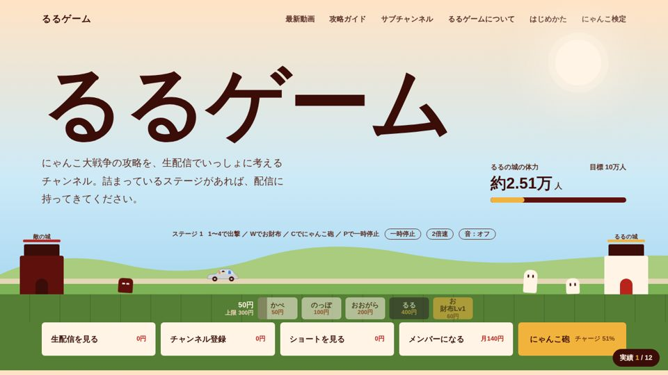

できること
サイトを作る
お店、キャスト、配信者の公式サイト。作って終わりにせず、手間をかけずに育つ仕組みまで用意します。
- お店やサービスの公式サイト
- キャスト・配信者のプロフィールサイト
- 動画やお知らせの自動更新
主役を育てる
キャストのプロデュースで身につけた「その人らしさを見つけて伝える」力で、方針から一緒に考えます。
- キャスト・配信者のプロデュース
- YouTubeチャンネルの方針とロードマップ
- 概要欄や企画の改善
写真を撮る
出張撮影のカメラマンとして、サイトやSNSで使う写真も自分で撮れます。
- プロフィール写真・宣材写真
- キャスト写真
- サイト用の撮影から公開まで一括で
実績
いちばん新しい事例と、これまでに作ったサイトです。

るるゲーム
にゃんこ大戦争の生配信チャンネル。プロデュースを担当（2026年10月〜）
- 相談されたこと
- にゃんこ大戦争だけでは、登録者10万人は難しいのではないか。
- やったこと
-
- 競合チャンネルと比べた現状分析と、10万人までのロードマップ
- 公式サイトの企画・制作（遊べるミニバトル、にゃんこ検定、実績解除つき）
- 新しい動画を1時間ごとに自動で取り込む仕組み
- 概要欄から動画ごとの攻略ページを自動で作り、検索からの入口を用意
- 概要欄の書き方と、新しいゲームへの広げ方の提案
サイト制作
るるゲーム、最初の1週間
| 10月30日 | 相談を受けて、現状分析とロードマップを作成 |
| 11月4日 | 公式サイトを公開。動画の自動更新と、動画ごとの攻略ページを追加 |
| 11月5日 | トップを遊べるミニバトルにし、にゃんこ検定・実績・初心者向けの案内を追加 |
進め方
いきなり作り始めず、まず話を聞いて数字を見るところから始めます。
話を聞く
始めたきっかけ、続けている理由、目標。その人の芯になるところを聞きます。
今を見る
予約や登録者の増え方、反応が良かったものの共通点を一緒に確認します。
計画を立てる
目標までの道のりを、時期ごとのやることに分けます。
作って、直し続ける
サイトや写真を整え、結果を見ながら手を入れていきます。
挑戦中：SASUKE出場
仕事のほかに、SASUKEへの出場を目指してトレーニングを続けています。
- ボルダリングつかむ力と、体を引き上げる力
- 水泳全身の持久力
- 縄跳びリズム感と、足の軽さ
- 整体続けられる体を整える
プロフィール
柴崎 凌兵
- レンタル彼氏 WarmRelation 代表
- レンタル彼女 Lily プロデューサー
- 出張撮影カメラマン
13年続くレンタル彼氏のお店の代表として、キャストひとりひとりの良さを見つけ、お客様に届く形にしてきました。その延長で、サイト制作と写真撮影も自分で手がけています。
自分が前に出るのではなく、主役が立つ場所を整えるのが仕事だと考えています。
WarmRelationは、Time Out Tokyo の記事「A quick guide to Japan's rental romance agencies」で紹介されています。
まずは話を聞かせてください
サイト制作、プロデュース、撮影、どれからでも相談できます。今の状況と、目指したいところを教えてください。
- メール
- shibasakiryohei.wr@gmail.com